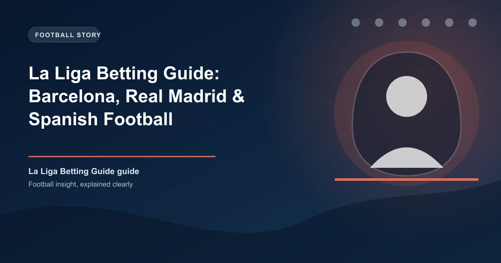

La Liga is home to two of the world's biggest football clubs - Real Madrid and Barcelona - making it one of the mostbet-on leagues globally. But betting on Spanish football requires understanding its unique characteristics.
This comprehensive guide covers everything you need to know about betting on La Liga, from understanding the tactical nuances to finding value in the betting markets.
La Liga has distinct characteristics that set it apart from other top European leagues. Understanding these is crucial for successful betting.
Spanish football is renowned for its technical, possession-based approach. Teams prioritize ball control and patient build-up play. This has several betting implications:
Lower-scoring matches: The focus on possession and tactical discipline often leads to fewer goals than in the Premier League or Bundesliga.
Late goals: Spanish teams are known for patiently building attacks, often creating chances in the final minutes. This makes in-play betting on Over 2.5 interesting.
Clean sheets: Goalkeepers in La Liga face fewer shots but often face high-quality chances. Clean sheet percentages can be misleading.
Playing Style: Counter-attacking with exceptional individual quality. Less possession-dependent than Barcelona.
Key Bettor Insights:
Playing Style: Total football, high possession, pressing from the front.
Key Bettor Insights:
Home advantage is significant in La Liga, but less pronounced than in the Premier League. The draw is less frequent - consider the draw as an option in tightly contested matches.
With smaller goal margins typical in La Liga, Asian handicaps offer great value. Barcelona and Real Madrid often face -1.5 or -2.0 lines.
La Liga averages around 2.69 goals per match. Look at defensive records - some teams play significantly under or over this average.
BTTS lands around 47% of La Liga matches. Value often exists in matches involving mid-table teams with attacking intent.
La Liga teams score a higher percentage of goals from set pieces than other major leagues. Track teams' set piece quality - this can be a valuable edge.
With only two teams dominating for so long, mid-table teams often play with less motivation. Look for matches where teams have something to play for.
La Liga takes longer to settle than the Premier League. Wait 5-6 gameweeks before making strong judgments on team form.
Matches like Sevilla vs. Real Betis, Valencia derbies, and El Clasico often defy form. These matches are more unpredictable.
La Liga odds often move less dramatically than Premier League odds due to lower betting volume. This can create value opportunities if you react faster to team news.
Not all bookmakers offer equal odds for La Liga. Here's what to look for:
Betting on La Liga requires patience and understanding of Spanish football's unique characteristics. The lower scoring environment and tactical nature create different opportunities than you'll find in the Premier League.
Focus on home advantage, team news, and the specific tactical matchups. With fewer games per season than the Premier League, each match carries more weight - and so does your research.
Generate optimized accumulator combinations from today's AI-powered predictions. Set your target odds and get instant ticket suggestions.
Free Ticket Builder →